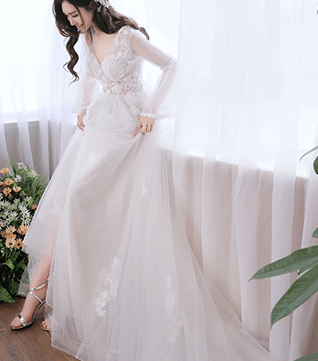
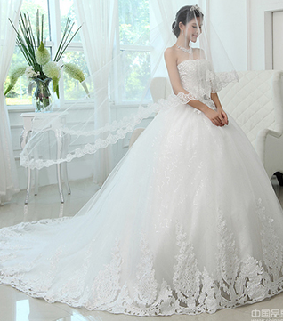
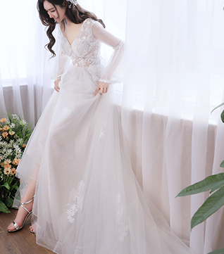

真实客照
中国风 /WEDDING PHOTOS
适合独立意识强的女孩精湛的剪裁和高档的面料是极简派过人之处极简的线条往往最能烘托出穿衣人的特质.它可以非常好地体现婚纱的档次与品质，使新娘在众人中脱颖而出。消费者可以针对摄影与造型参考亲友或网友实际的婚纱照片，也可以多翻阅市面上的新娘杂志，找出自己喜欢的风格，婚纱影楼提供的样本照片只能参考不能全然相信，在拍照前夕多与摄影师、造型师沟通，最好要用自己搜集来的婚纱照片展示给他们看，婚妙摄影工作室是为展现新人的特色的，所以要选择最适合自己的风格。在整个婚纱照市场，拍摄婚妙照的选择有两大方向，影楼和个性的摄影工作室。

蕾丝长袖婚纱
又可分为小拖尾、中拖尾和大拖尾，短的40公分，长的80公分以上。

蓬裙型婚纱
又可分为小拖尾、中拖尾和大拖尾，短的40公分，长的80公分以上。

拖尾婚纱
又可分为小拖尾、中拖尾和大拖尾，短的40公分，长的80公分以上。